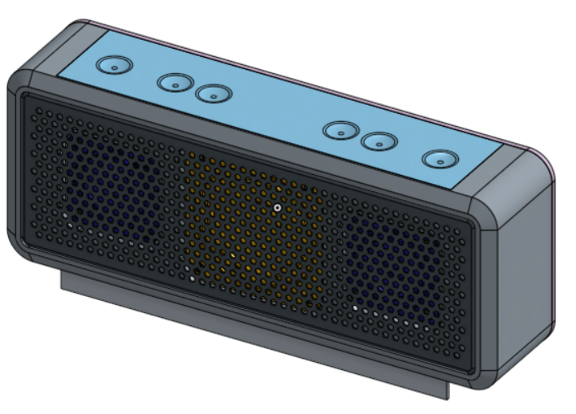

Week6~8
Ch6-Introduction to Product Design -Product Design Within Teams
Ch7-Introduction to Product Design -Iterative Design
Ch8-Product Design - Advanced Assembly & Rest of Design Process
這幾周的目標"藍芽音響"
正面:
背部:
學習要點-分別是
Ch6-
開始藍芽音響的計畫
創立團隊
使用導入部件
組織特徵樹
協同合作
在圖件中討論
追蹤
藍牙音響結合揚聲器，框架，前蓋，電池
隔間和按鈕覆蓋
Ch7-
繼續藍芽音響的計畫
使用FeatureScript進行螺絲凸台和肋條
添加額外的模型細節
版本控制和歷史記錄
重新排序參數化功能
自上而下的設計
完成藍芽音響的外觀
Ch8-
繼續藍芽音響的計畫
使用相關的文件當硬體的規格
先進的裝配概念
在裝配模式中應用“snap mode”
在裝配模式分類
複製緊固件
完成藍芽音響包含組合與零件圖等...
Week5 << Previous Next >> Week9~12